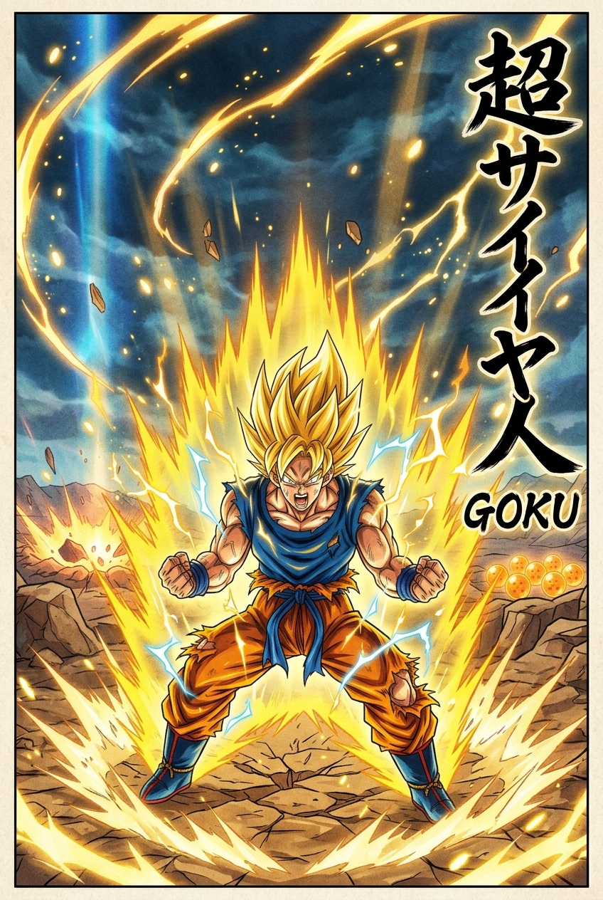
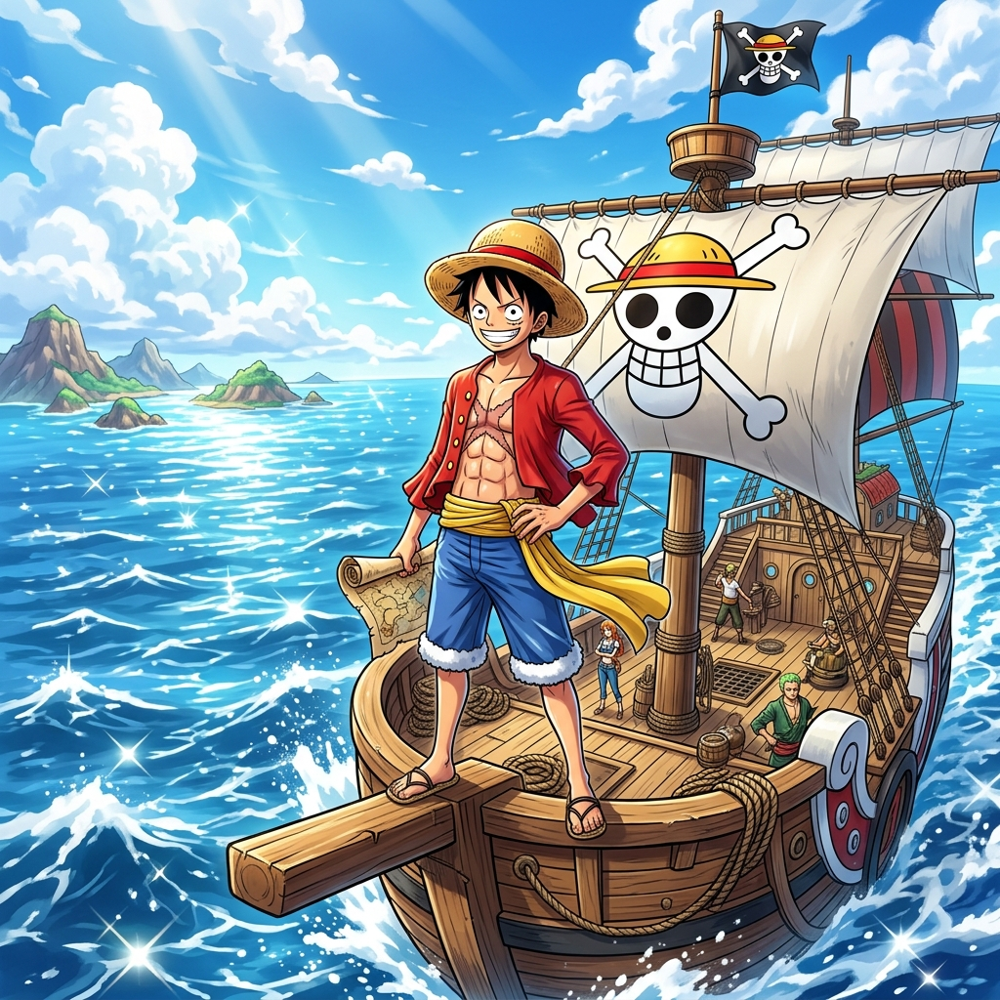
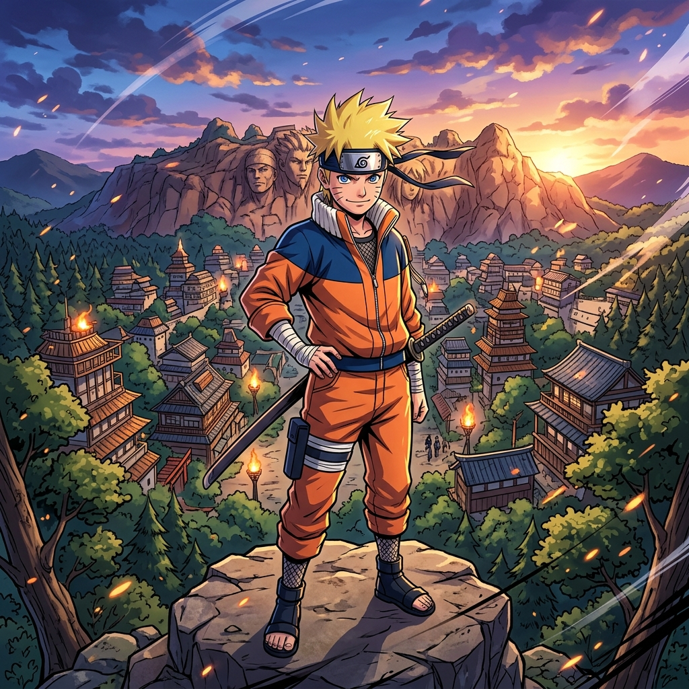
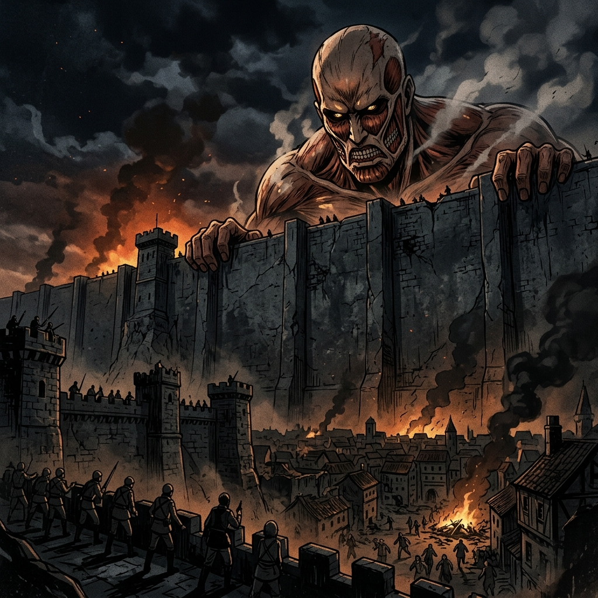
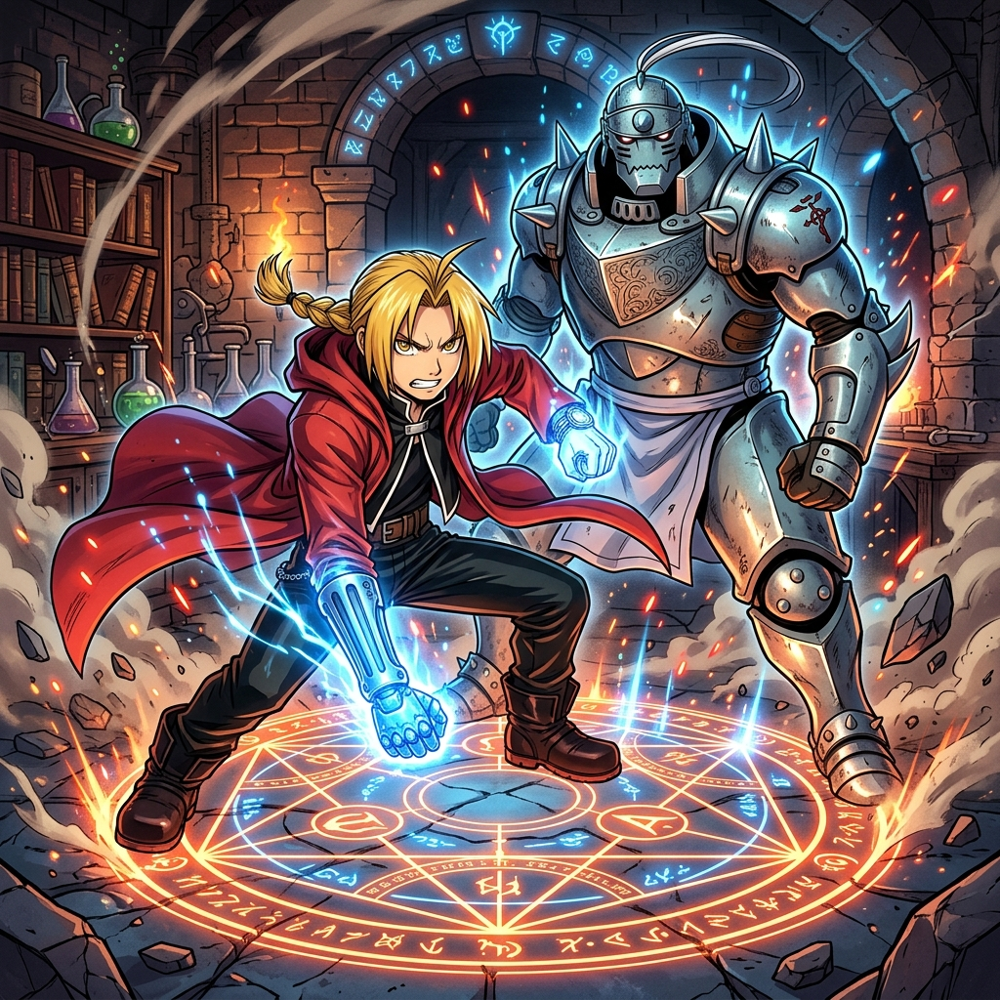
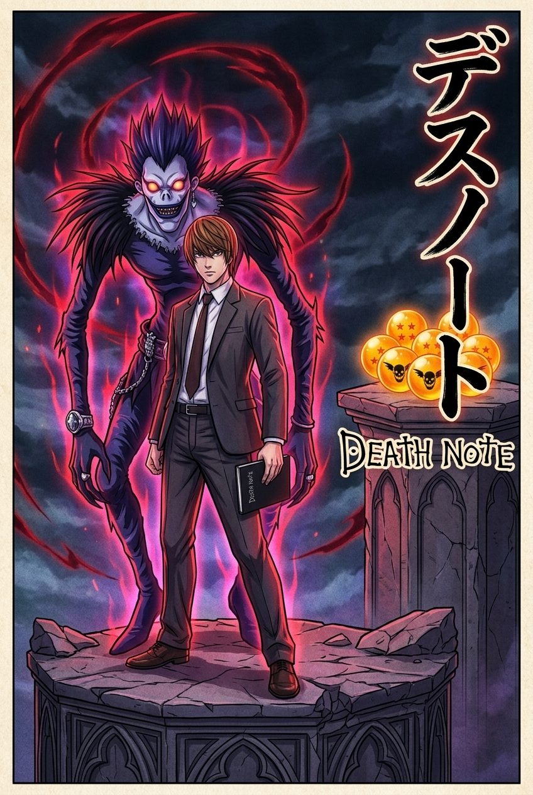
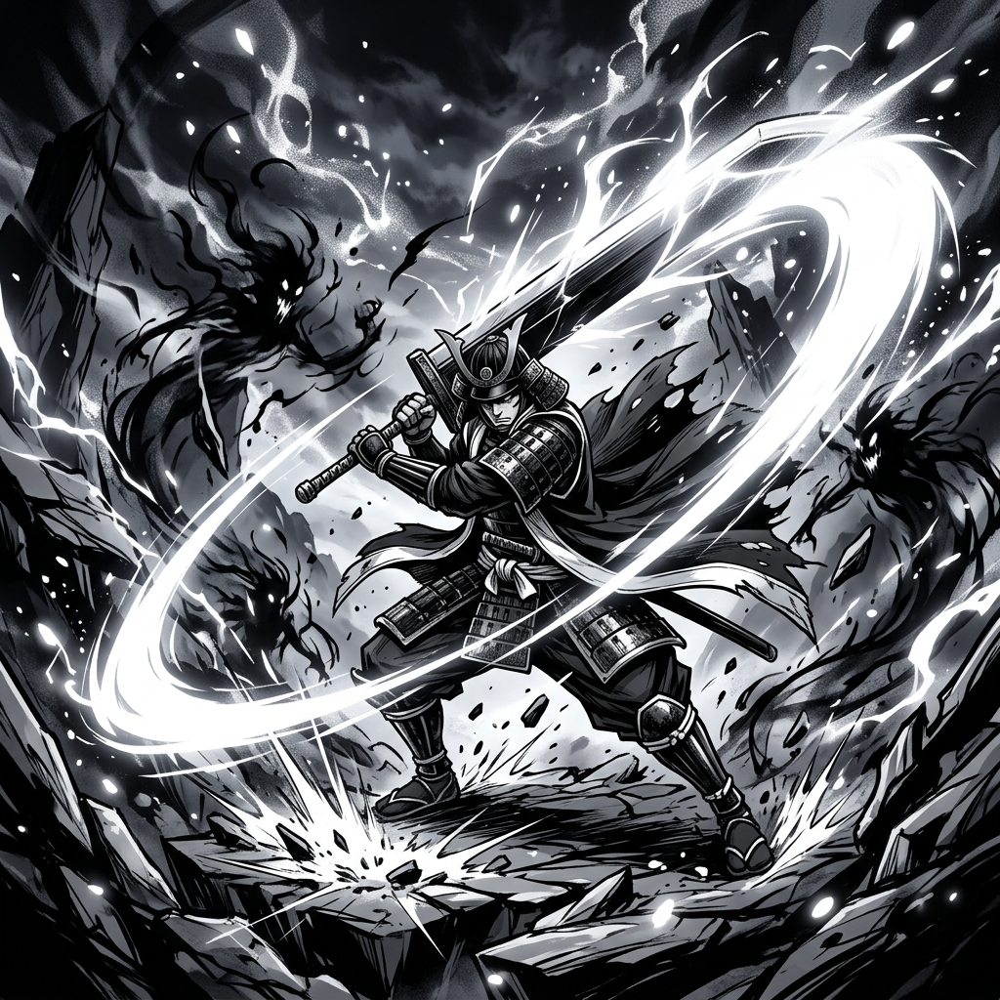

TOP 10
ANIMES
Desliza para descubrir las leyendas
SCROLL
Dragon Ball Z
El pionero absoluto que introdujo el anime al mundo entero. Sigue las épicas batallas de Goku, rompiendo constantemente sus límites para proteger el universo de amenazas inimaginables.

One Piece
La odisea de Monkey D. Luffy y su tripulación en busca del tesoro definitivo. Presenta uno de los mundos más extensos, interconectados y mejor construidos en la historia de la ficción.

Naruto
La inspiradora historia de un joven marginado que anhela convertirse en el Hokage. Un relato de perseverancia, amistad, y dolorosas lecciones sobre la guerra y la paz.

Attack on Titan
La humanidad sobrevive acorralada en ciudades amuralladas por miedo a los Titanes. Una obra maestra del misterio y la política, llena de giros inesperados y dilemas morales crudos.

Fullmetal Alchemist
Dos hermanos utilizan la alquimia prohibida para resucitar a su madre y sufren graves consecuencias. Ahora viajan buscando la Piedra Filosofal para recuperar sus cuerpos físicos.

Death Note
¿Qué harías si pudieras matar a cualquiera solo con escribir su nombre? Light Yagami decide purgar el mundo de criminales, desencadenando una intensa batalla mental con el detective L.

Bleach
Con un estilo inconfundible y una banda sonora épica, sigue a Ichigo Kurosaki en su labor como Segador de Almas, defendiendo la vida humana y espiritual de horribles monstruos llamados Hollows.

Hunter x Hunter
Una brillante deconstrucción del género shonen. El sistema de poderes más inteligente del anime se combina con un mundo fascinante, oscuro y una evolución de personajes inolvidable.

Demon Slayer
Visualmente impactante gracias al estudio Ufotable. Tanjiro Kamado emprende un oscuro y hermoso viaje para encontrar una cura para su hermana convertida en demonio.

Pokémon
La franquicia de entretenimiento más grande del mundo. Un viaje atemporal lleno de nostalgia que ha marcado la infancia de múltiples generaciones alrededor del globo.